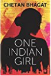

Back
Buyit
Contact Us
Back
Buyit
Contact Us
Books
One Indian Girl Paperback- 1 Oct 2016
by Chetan Bhagat

PRODUCT DESCRIPTION
Review
I liked this book because it makes an honest attempt to look at things from women's perspective. It is also different in that it describes an atypical Indian girl , and I can almost understand where the characters come from. It does not end in an unexpected way, but yet it ends in a good way. I really enjoyed reading this book. I appreciate that it talks about self respect despite our cultural and ethnic backgrounds. --By A Customer on October 15, 2016
While Chetan Bhagat is so known for clear and simple articulation, with hilarious analogies, he has taken this up a notch from his standard. The inner feelings of a woman - uncoated, plain and not blanched by attribution errors, as the inner 'mini-me' of the main character is Extremely accurate. --By Padma Venkatrangan on October 5, 2016
Good simple writing that i love, enjoyed the feminism take and could identify with so much! Glad it didn't have a filmy ending lol --By A&P on October 18, 2016
ABOUT THE AUTHOR
Chetan Bhagat is the author of eight blockbuster books. These include six novels-Five Point Someone (2004), One Night @ the Call Center (2005), The 3 Mistakes of My Life (2008), 2 States (2009), Revolution 2020 (2011), Half Girlfriend (2014) and the non-fiction titles, What Young India Wants (2012) and Making India Awesome (2015). Chetan's books have remained bestsellers since their release. Several of his novels have been adapted into successful Bollywood films.
The New York Times called him the 'the biggest-selling English language novelist in India's history'. TIME magazine named him amongst the '100 most influential people in the world' and Fast Company, USA, listed him as one of the world's '100 most creative people in business'.
Product details
Paperback: 280 pages
Publisher: Rupa Publications India; First edition (1 October 2016)
Language: English
ISBN-10: 8129142147
ISBN-13: 978-8129142146
Product Dimensions: 13 x 1.6 x 19.8 cm